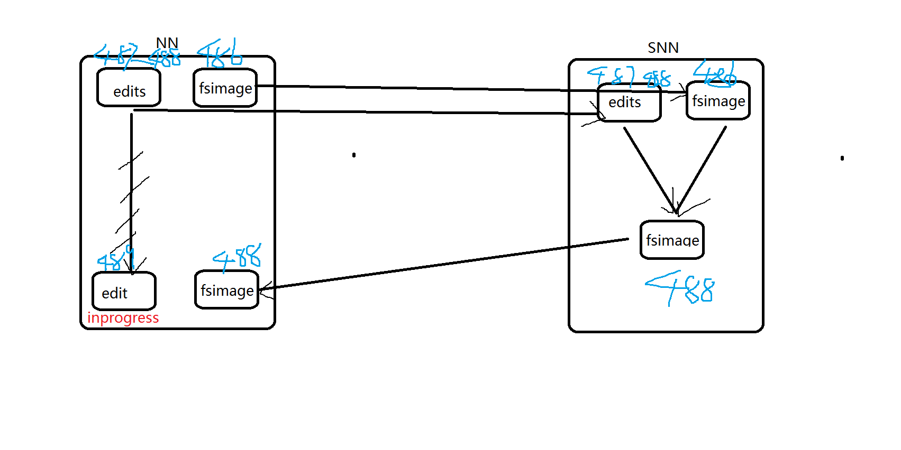

1.SNN的流程

2.HDFS常用命令
-
查看ls
1
2
3
4
5
6
7hadoop fs -ls /
if [ "$COMMAND" = "fs" ] ; then
CLASS=org.apache.hadoop.fs.FsShell
hdfs dfs -ls /
elif [ "$COMMAND" = "dfs" ] ; then
CLASS=org.apache.hadoop.fs.FsShell -
上传下载
1
2-get/-copyToLocal
-put/-copyFromLocal -
创建文件夹
1
-mkdir
-
移动 拷贝
1
2-mv
-cp -
删除
1
2
3
4
5
6
7
8
9-rm [-f] [-r|-R] [-skipTrash] <src> ...]
[hadoop@ruozedata001 hadoop]$ hdfs dfs -rm /1.log
20/05/12 21:45:27 WARN util.NativeCodeLoader: Unable to load native-hadoop library for your platform... using builtin-java classes where applicable
20/05/12 21:45:27 INFO fs.TrashPolicyDefault: Moved: 'hdfs://ruozedata001:9000/1.log' to trash at: hdfs://ruozedata001:9000/user/hadoop/.Trash/Current/1.log
[hadoop@ruozedata001 hadoop]$ hdfs dfs -rm -skipTrash /2.log
20/05/12 21:46:23 WARN util.NativeCodeLoader: Unable to load native-hadoop library for your platform... using builtin-java classes where applicable
Deleted /2.log- 注意生产上要开启回收站！+回收站的有效期至少7天！！
慎用-skipTrash 不要加！！！
如使用的是CDH/HDP 去检查是否开启 开启周期
1
2
3
4<property>
<name>fs.trash.interval</name>
<value>10080</value>
</property> - 注意生产上要开启回收站！+回收站的有效期至少7天！！
-
权限
1
2-chmod
-chown -
检查可用压缩
1
2
3
4
5
6
7
8
9
10
11
12-checknative
[hadoop@ruozedata001 hadoop]$ hadoop checknative
20/05/12 21:53:25 WARN util.NativeCodeLoader: Unable to load native-hadoop library for your platform... using builtin-java classes where applicable
Native library checking:
hadoop: false
zlib: false
snappy: false
lz4: false
bzip2: false
openssl: false
20/05/12 21:53:26 INFO util.ExitUtil: Exiting with status 1 -
安全模式

- 写不可以 读可以
- 常见错误：Name node is in safe mode.
1
2
3
4-safemode <enter | leave | get | wait>
hdfs dfsadmin -safemode enter
hdfs dfsadmin -safemode leave- 什么时候会用到安全模式：
- hdfs故障 nn log日志
根据错误去看看尝试能不能解决，和尝试先手动让他你看安全模式 - 业务场景
- hdfs故障 nn log日志
3.各个DN节点的数据平衡
-
各节点数据平衡阈值默认是10，可通过参数threshold 修改
1
2[hadoop@ruozedata001 sbin]$ ./start-balancer.sh
[hadoop@ruozedata001 sbin]$ ./start-balancer.sh -threshold 10.0 -
每个节点的磁盘使用率-平均的磁盘使用率< 10%
节点一：90%，节点二：60%，节点三：80%
90+60+80=230/3=76%
节点一：90-76=14 76-76=0
节点二：60-76=-16 78-76=2
节点三：80-76=4 76-76=0 -
生产上定时每天放到业务低谷比如凌晨 去做平衡操作
-
调整平衡的网络带宽：hdfs-site.xml文件，dfs.datanode.balance.bandwidthPerSec 10m–>50m
4. 单个DN的多块磁盘的数据均衡
-
在投产前规划 这个DN机器上 10块磁盘 2T 不做raid==》20T
1
2
3
4<property>
<name>dfs.datanode.data.dir</name>
<value>/data01,/data02,/data03</value>
</property>- 为什么要用多块物理磁盘？
因为多个磁盘的 IO的 叠加的 - 性价比最高的 2.5英寸 1W 2T，规划2年存储空间
- 为什么要用多块物理磁盘？
-
第一个月 1个磁盘 500G 已经使用480G，第二个月 新增一个磁盘 2T
将第一块磁盘480G手动转到/data02，然后软连接到/data01 -
第一个月 1个磁盘 500G 已经使用480G，第二个月 新增一个磁盘 500G
-如何多个磁盘 均衡数据？
CDH5.16.2
或是apache hadoop 3.x版本，apache hadoop 2.10无此特性
开启dfs.disk.balancer.enabled:1
2
3
4<property>
<name>dfs.disk.balancer.enabled</name>
<value>true</value>
</property>- 生成 ruozedata001.plan.json 文件
1
hdfs diskbalancer -plan [机器名]
- 执行
1
hdfs diskbalancer -execute [机器名].plan.json
- 查询
1
hdfs diskbalancer -query [机器名]